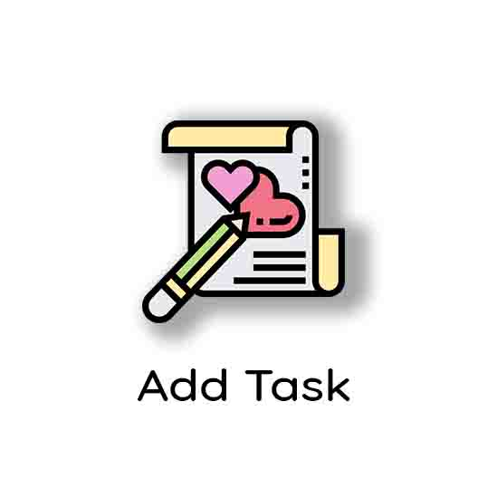
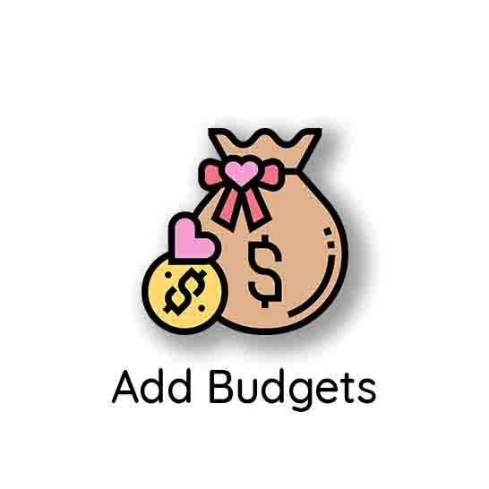
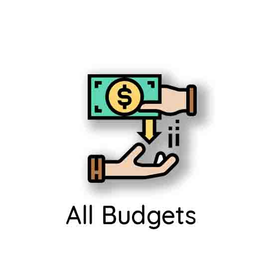
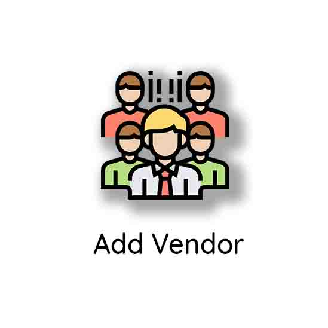

<!--
  Generated template for the AddPage page.

  See http://ionicframework.com/docs/components/#navigation for more info on
  Ionic pages and navigation.
-->
<ion-header>
  <ion-navbar>
    <!-- <ion-title>add</ion-title> -->
    <ion-icon name="refresh" item-start style="font-size: 25px;margin-left: 10px;"></ion-icon>
    <ion-icon name="person" item-end style="margin-left: 320px;font-size: 25px;"></ion-icon>
  </ion-navbar>
</ion-header>

<ion-content class="bg" >
  
  
  
  
  
  
  
  

</ion-content>
